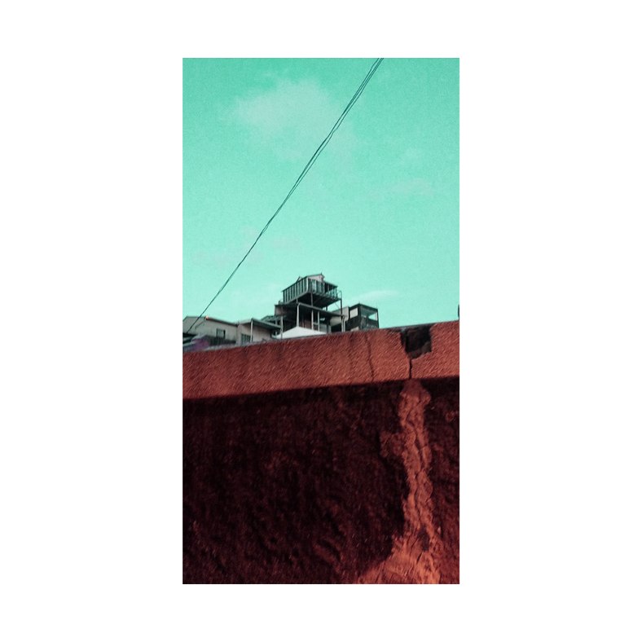

夏日慢版
MAY 20, 2020
如同所有在烈夏綻放的激情
到了最後 只留下印象派的光點與燦亮
酣睡如五月嬰孩
同時如伊卡洛斯般墜落

最近手上這台acer aspire愈發遲緩起來，所有指令都以慢半拍的姿態游動，開個illustrator不時黑屏，連藍芽開關和應用程式搜尋欄都直接憑空消失。這究竟是因為是在中國灌的系統有問題，還是它也是一樣，老了，累了，我寧願是相信後者。畢竟也是陪著我走過近四年的大學寒暑，期間受盡我各種折磨虐待，年事已高，顯露出疲態大概也不能怪它。
大學生涯的最後一學期以荒謬的渾沌為基調前來,所有自以為安排妥當的計畫，隨著熟悉地，不饒人地，屬於台南的炎熱再度回歸，全部都如同一場陣雨後的水窪般快速地蒸發，只來得及映照出刺眼的藍天。
突如其來證明了，人一切的努力也不敵大命運的安排。曾經那麼想望的交換計劃，也可以因為席捲全球的荒謬疫情就此消失，連一點緬懷都不留給即將和大學時代分別的人。就如同爬上了排雲山莊也可以因為恰恰好的4月雪而在登頂前止步。
只差在，山永遠都在，然而大學生活卻是一去不回來了。四年一瞬，竟證明了生命中許多事件，我其實並無能為力，生活逼著你面對現實你也不得不拒絕。
成長的傷痛似乎只隨著年歲越來越多。
這個結論並無消極負面之意，只是事實真切地是如此。
事實上，在我寫字的當下，如果以6月30日為說再見的日子，那麼我只與此地剩下42天相處的時光，這個數字與4年相比是令人驚悚地短暫，又，日子其實並無因此而有所不同，或者只是裝做仍擁有游刃有餘地不疾不徐，來逃避那想到即將結束的哀傷。